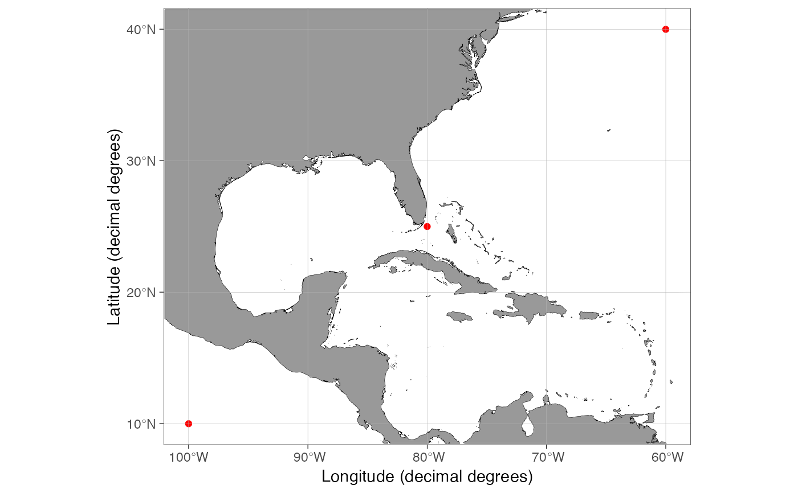
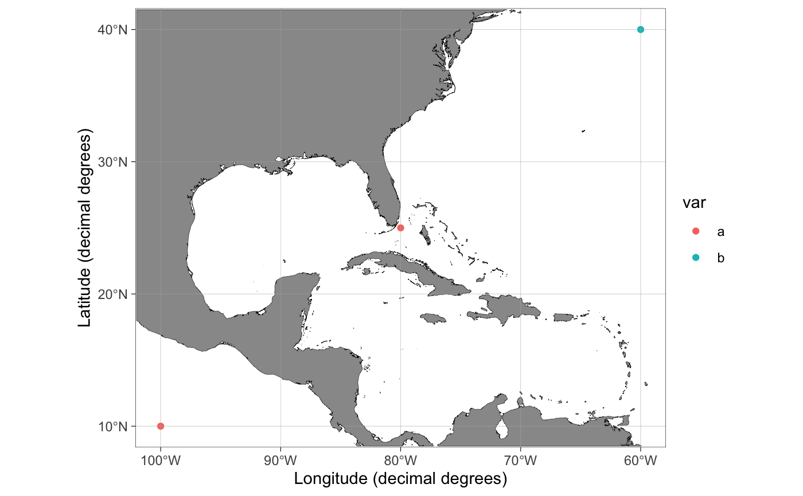
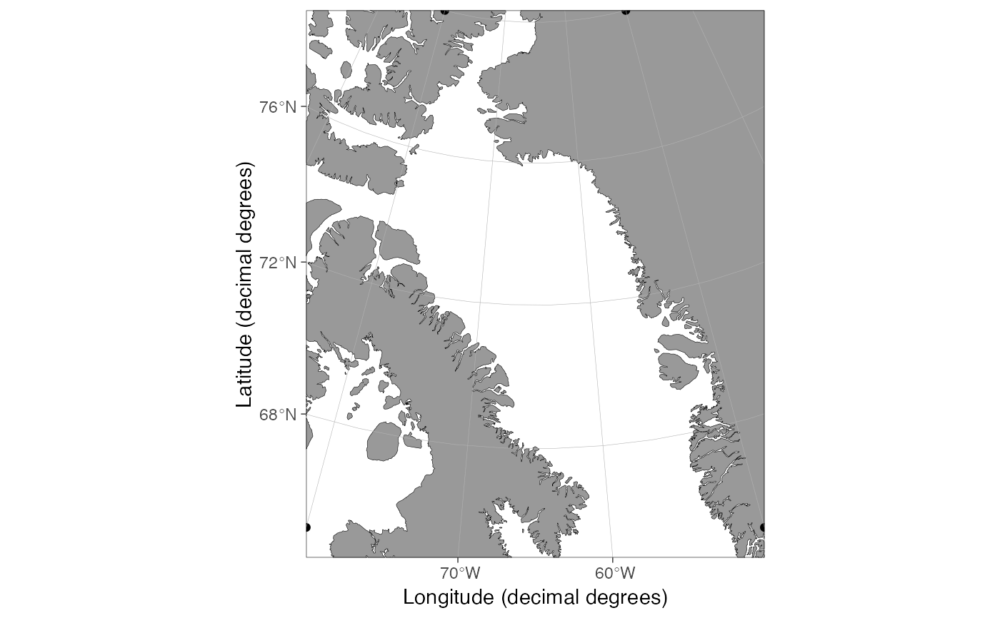

qmap is a shortcut similar to ggplot2's qplot designed to quickly plot data with a limited range of options.
Usage
qmap(
data,
x = NULL,
y = NULL,
geom = "point",
limits = NULL,
shapefiles = NULL,
bathymetry = FALSE,
glaciers = FALSE,
rotate = FALSE,
legends = TRUE,
legend.position = "right",
lon.interval = NULL,
lat.interval = NULL,
bathy.style = "poly_blues",
bathy.border.col = NA,
bathy.size = 0.1,
land.col = "grey60",
land.border.col = "black",
land.size = 0.1,
gla.col = "grey95",
gla.border.col = "black",
gla.size = 0.1,
grid.col = "grey70",
grid.size = 0.1,
base_size = 11,
projection.grid = FALSE,
expand.factor = 1.1,
verbose = FALSE,
...
)Arguments
- data
Data frame to use.
- x, y, ...
Aesthetics passed into each layer. Longitude and latitude columns are automatically recognized using the
guess_coordinate_columnsfunction.- geom
Character argument specifying geom(s) to draw. Defaults to "point". Other alternatives are "text" and "label". The "text" option can also be triggered by simply mapping a variable to
label(see Examples).- limits
Map limits. One of the following:
numeric vector of length 4: The first element defines the start longitude, the second element the end longitude (counter-clockwise), the third element the minimum latitude and the fourth element the maximum latitude of the bounding box. The coordinates can be given as decimal degrees or coordinate units for shapefiles used by a projected map. Produces a rectangular map. Latitude limits not given in min-max order are automatically ordered to respect this requirement.
single integer between 30 and 88 or -88 and -30 produces a polar map for the Arctic or Antarctic, respectively.
Can be omitted if
dataorshapefilesare defined.- shapefiles
Either a list containing shapefile information or a character argument referring to a name of pre-made shapefiles in
shapefile_list. This name is partially matched. Can be omitted iflimitsordataare defined as decimal degrees.- bathymetry
Logical indicating whether bathymetry should be added to the map.
- glaciers
Logical indicating whether glaciers and ice-sheets should be added to the map.
- rotate
Logical indicating whether the projected maps should be rotated to point towards the pole relative to mid-longitude limit. Experimental.
- legends
Logical indicating whether the legend for bathymetry should be shown.
- legend.position
The position for ggplot2 legend. See the argument with the same name in theme.
- lon.interval, lat.interval
Numeric value specifying the interval of longitude and latitude grids.
NULLfinds reasonable defaults depending onlimits.- bathy.style
Character defining the style for bathymetry contours. Alternatives:
"poly_blues"plots polygons filled with different shades of blue."poly_greys"plots polygons filled with different shades of gray."contour_blues"contour lines with different shades of blue."contour_grey"plots gray contour lines.
- land.col, gla.col, grid.col
Character code specifying the color of land, glaciers and grid lines, respectively. Use
NAto remove the grid lines.- land.border.col, gla.border.col, bathy.border.col
Character code specifying the color of the border line for land, glacier, and bathymetry shapes.
- land.size, gla.size, bathy.size, grid.size
Numeric value specifying the width of the border line land, glacier and bathymetry shapes as well as the grid lines, respectively. Use the
LSfunction for a specific width in pt. See Details.- base_size
Base size parameter for ggplot. See ggtheme.
- projection.grid
Logical indicating whether the coordinate grid should show projected coordinates instead of decimal degree values. Useful to define limits for large maps in polar regions.
- expand.factor
Expansion factor for map limits with the
dataargument. Can be used to zoom in and out automatically limited maps. Defaults to 1.1. Set toNULLto ignore.- verbose
Logical indicating whether information about the projection and guessed column names should be returned as message. Set to
FALSEto make the function silent.
Value
Returns a ggplot map, which can be assigned to an object and modified as any ggplot object.
See also
Other basemap functions:
basemap(),
shapefile_list(),
transform_coord()
Examples
# if(requireNamespace("ggOceanMapsData", quietly = TRUE)) {
dt <- data.frame(lon = c(-100, -80, -60), lat = c(10, 25, 40), var = c("a", "a", "b"))
# Set color
qmap(dt, color = I("red"))

# Map color
# \donttest{
qmap(dt, color = var)

#
# Map text
qmap(dt, label = var)

# All basemap arguments work in qmap()
dt <- data.frame(lon = c(-80, -80, -50, -50), lat = c(65, 80, 80, 65))
qmap(dt, rotate = TRUE)
# }
# }